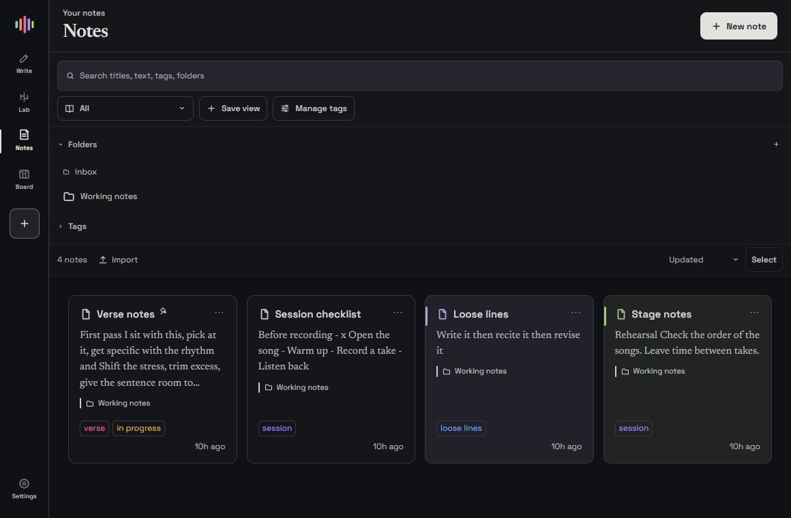
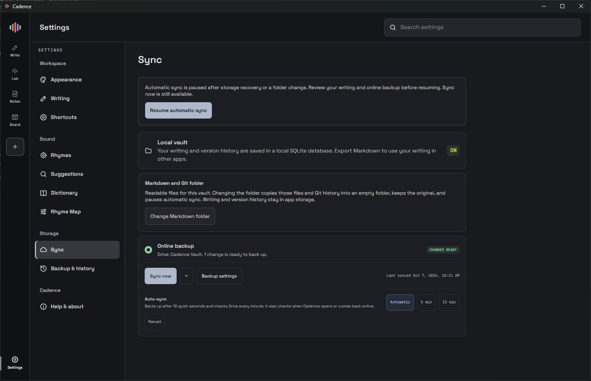
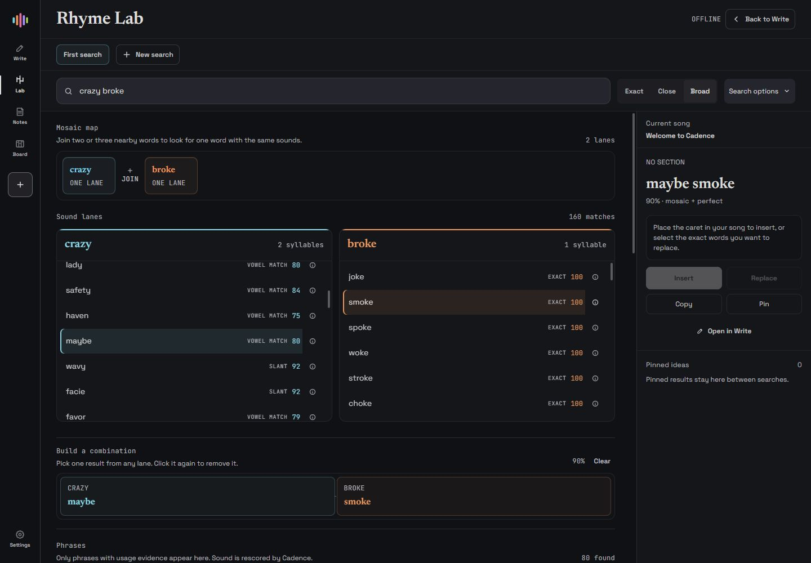
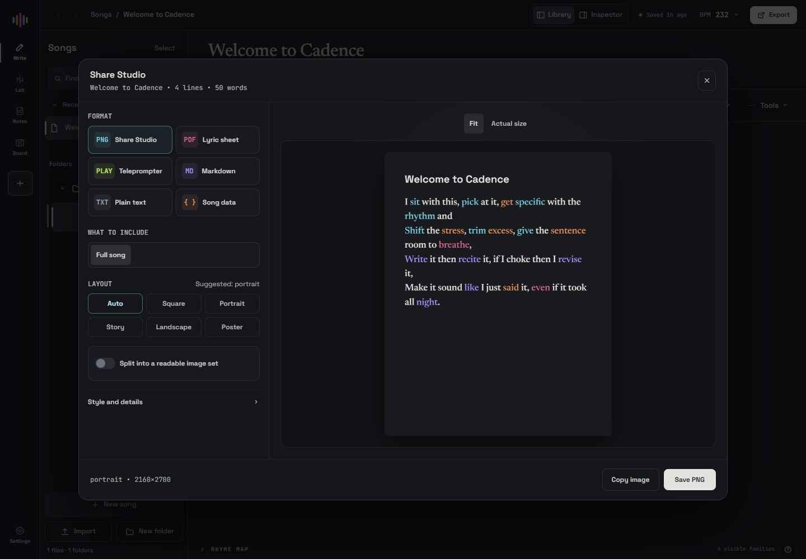

Rhyme Lab
Enter a word or phrase. For a phrase like “crazy broke,” you can pick a rhyme for each part.
I wanted to see what my rhyme schemes were doing without losing my songs and loose lines across a bunch of apps. So I made Cadence.
Cadence is free and works offline. There’s no subscription, and no AI writes or reviews your lyrics.
I sit with this, pick at it, get specific with the rhythm and
Shift the stress, trim excess, give the sentence room to breathe,
Write it then recite it, if I choke then I revise it,
Make it sound like I just said it, even if it took all night.
Pick a color to follow those rhymes through the verse.
Changes reset when you reload.

Changes reset when you reload.
VERSE 1 · LOOSE MATCHING
Sync songs and notes between your computer and phone with Google Drive.
If you edit the same song on both devices, Cadence shows you both copies so you can choose what to keep.
Download the Android app here. It’s not on Google Play yet.

Select a highlighted word to change its rhyme family.
Changes reset when you reload.
Verse 1
Cadence found four rhyme families in the opening verse, covering 76% of its words. Select a word to move it to another family, or choose “Not a rhyme” to remove its highlight.
Turn on JavaScript to try corrections here.
Rhymes can fall in the middle of a line, too. pressure · session · lessonflow · glow · show
Enter a word or phrase. For a phrase like “crazy broke,” you can pick a rhyme for each part.
Keep a loose line in Notes, link a note to a song, or move cards around on a Board.
Pick the lines you want to share and choose a background. You can keep the rhyme colors, add a logo, or print a lyric sheet. For rehearsal, open the teleprompter.
Write it then recite it then revise it


Open the example song, or start a new one. Cadence saves as you write. You can replay the tour in Settings.
Open Overview to compare line lengths or find a word you keep repeating. Choose a result to jump to that lyric. Turn on Syllables to see a syllable count for each word on your current line. Cadence shows suggested breaks where it knows them.
To practice a verse, open the song's BPM control. Tap along to set the tempo, then start the metronome. The volume control adjusts the click.
You can write without an account and set up online backup later.
Cadence saves your writing and its history on this device. To take your text to another app, export it as Markdown. On desktop, your Markdown/Git folder also holds a readable copy of your vault.
Google Drive syncs your writing. Each device keeps its own version history. Before uninstalling on Android, export a complete backup so you can recover both.
Update every connected device to 1.8 or later before syncing saved themes and note tags. GitHub backup works on desktop only. Drive needs an internet connection. You can still write and look up rhymes offline.
Read both versions, then choose which one to keep. You can keep both when that option appears. Cadence saves a recovery copy before it applies your choice.
If you edit while the review is open, Cadence may ask you to compare the newer copies before you continue.
Download the signed APK below and open it. If Android asks, allow your browser or file manager to install it.
Install updates over the app you already have. Do not uninstall first. If Android refuses to update an old test build, it may have a different signing key. Before replacing it, export a complete backup and check your writing on another device. Uninstalling can erase your local writing and history. Drive sync leaves history on the device.
Cadence is not on Google Play yet.
I don't have a Windows Authenticode certificate for Cadence yet. Windows can show that warning even when the updater signature and download checksum are valid.
Download from the official release below. If the file came from somewhere else or its checksum differs from the published one, stop before installing.
Cadence 1.9.0 is available for desktop and Android.
Run the setup EXE to install Cadence on your PC. Cadence saves your writing locally. You can turn on online backup in Settings.
Download for Windows Portable, macOS and Linux ↗Install the APK to write offline on your phone or tablet. Use Google Drive if you want to sync with your computer.
Download for Android Read the setup guide ↑